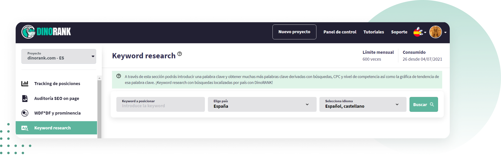
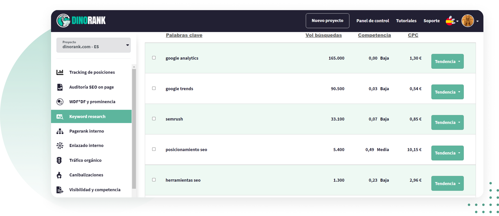
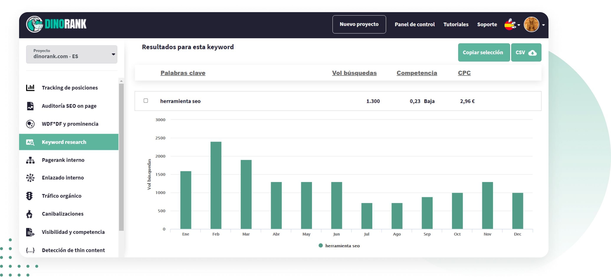

buen keyword research no consiste en introducir una palabra clave en una herramienta SEO y coger las que tienen un mayor número de búsquedas. "); ?>
colocar en tu texto las keywords por las que el usuario va a buscar tu producto o servicio en Google. "); ?>
la intención de búsqueda. "); ?>
herramientas SEO gratuitas, porque no siempre te dan resultados asociados con la búsqueda que has hecho. "); ?>
interpretar los datos. "); ?>
información clara, que sea fácil de interpretar y de usar. "); ?>

-
Introduces la keyword que quieras analizar, el idioma y el país. "); ?>

-
Listado de keywords. "); ?>


estacionalidad de las keywords (si la hay) para
saber cuándo tienes que hacer más hincapié en su venta.
También
puedes ver las palabras clave derivadas (long tail) que
tendrán menos volumen de búsqueda, pero seguramente, serán más
fáciles de posicionar.
"); ?>